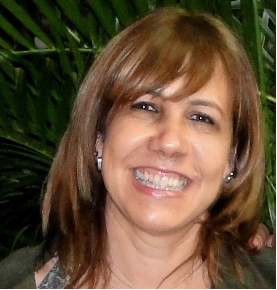
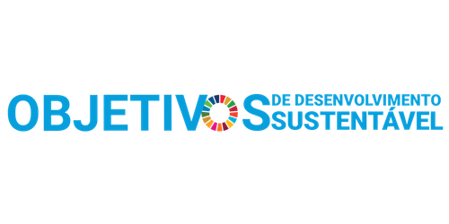

Palestrantes
Prof. Dr. Alessandro Haupenthal
Universidade Federal de Santa Catarina (Campus Araranguá)
| Mini currículo |
|---|
| Professor do curso de Fisioterapia da Universidade Federal de Santa Catarina (Campus Araranguá) |
| Possui graduação em Fisioterapia (2005) e em Educação Física (2010) pela Universidade do Estado de Santa Catarina |
| Especialização em Saúde Pública pela Universidade Federal de Santa Catarina (2010) |
| Master 1ère année mention Exercice, Sport, Santé et Handicap na Universidade Blaise Pascal, França (2007) |
| Mestrado em Ciências do Movimento Humano no CEFID da UDESC dentro da linha de pesquisa em biomecânica (2008), bolsista CAPES |
| Doutorado em Ciências do Movimento Humano no CEFID da UDESC (2013), bolsista CAPES |
| Foi subcoordenador e coordenador do Programa de Pós-Graduação em Ciências da Reabilitação e coordenador de pesquisa do Departamento de Ciências da Saúde |
| Membro da diretoria na comissão científica da Associação Brasileira de Pesquisa e Pós-Graduação - ABRAPG-FT |
| Foi fisioterapeuta do Figueirense Futebol Clube |
| Membro do corpo editorial da revista Fisioterapia em Movimento e revisor de periódicos científicos nacionais e internacionais |
| Tem experiência na área de Fisioterapia e Educação Física, atuando principalmente nos seguintes temas: reabilitação, biomecânica, fisioterapia, fisioterapia esportiva e cinesiologia. |
Início
Profa. Dra. Anielle Cristhine de Medeiros Takahashi
Universidade Federal de São Carlos
| Mini currículo |
|---|
| Graduada em Fisioterapia pela Universidade Federal de São Carlos (2003) |
| Mestre (2007) e Doutora em Fisioterapia pelo Programa de Pós Graduação em Fisioterapia da UFSCar (2010) |
| Realizou estágio de doutorado sanduiche na Universitá degli Studi di Milano no período de 01/07/08 a 31/12/08 |
| Atualmente é professora associada do Departamento de Fisioterapia da UFSCar |
| Credenciada no Programa de Pós Graduação em Fisioterapia da UFSCar |
| Atua principalmente nos seguintes temas: envelhecimento, fragilidade, exercício físico, complexidade de sinais biológicos, comportamento sedentário |
| Bolsista produtividade em pesquisa CNPq (PQ 2) |
Início
Prof. Dr. Arthur de Sá Ferreira
Centro Universitário Augusto Motta
| Mini currículo |
|---|
| Graduação em Fisioterapia pela Universidade Federal do Rio de Janeiro (1999) |
| Mestrado em Engenharia Biomédica pela Universidade Federal do Rio de Janeiro (2002) |
| Doutorado em Engenharia Biomédica pela Universidade Federal do Rio de Janeiro (2006) |
| Vice-presidente da Associação Brasileira de Pós-graduação e Pesquisa em Fisioterapia (ABRAPG-FT) (2020-2022) |
| Membro efetivo da Associação Brasileira de Pesquisa e Pós-Graduação em Fisioterapia (ABRAPG-FT) |
| Membro efeito do Committee on Publication Ethics (COPE) |
| Membro efetivo da Royal Statistical Society (RSS) |
| Professor adjunto do Centro Universitário Augusto Motta (UNISUAM) |
| Coordenador do Programa de Pós-graduação em Ciências da Reabilitação (PPGCR) |
| Fundador e pesquisador no Laboratório de Simulação Computacional e Modelagem em Reabilitação (LSCMR) dos Programas de Pós-graduação em Ciências da Reabilitação (PPGCR) e de Desenvolvimento Local (PPGDL) da UNISUAM |
| Tem experiência na área de Fisioterapia e Terapia Ocupacional, atuando principalmente nos seguintes temas: movimento funcional humano, processamento de sinais biomédicos, modelagem computacional, bioestatística, fisioterapia musculoesquelética e cardiovascular e medicina tradicional (chinesa) |
Início
Profa. Dra. Cristine Homsi Jorge
Universidade de São Paulo, Faculdade de Medicina de Ribeirão Preto
| Mini currículo |
|---|
| Graduação em Fisioterapia pela Universidade de Ribeirão Preto (1995) |
| Mestrado (2000) e doutorado (2004) em Enfermagem em Saúde Pública pela Escola de Enfermagem de Ribeirão Preto-Universidade de São Paulo |
| Professora associada 3 do Departamento de Ciências da Saúde da Faculdade de Medicina de Ribeirão Preto- USP |
| Coordenadora do Programa de Pós-graduação em Reabilitação e Desempenho Funcional (2022-2024) |
| Responsável pela área de Fisioterapia na Saúde da Mulher, pesquisando atualmente temas relacionados aos métodos de avaliação e intervenção fisioterapêutica relacionados ao assoalho pélvico feminino, a gravidez e ao puerpério |
| Realizou seu pós-doutorado no Mercy Hospital for Women em Melbourne na Austrália em 2013 e concurso para livre-docente em 2017 |
| É sócia fundadora e foi a primeira Presidente da Associação Brasileira de Fisioterapia em Saúde da Mulher (ABRAFISM), sendo atualmente Diretora Científica desta Associação |
| Delegada Chefe Representante do Brasil na “International Organization of Physiotherapists s in Pelvic and Womens Health (IOPPWH) |
| Vice-Presidente do subgrupo da “World Physiotherapy” (2023-2027) |
| Editora-Chefe do “Brazilian Journal of Physical Therapy” (2023-2027) |
Início

Profa. Dra. Elaine Caldeira de Oliveira Guirro
Universidade de São Paulo, Faculdade de Medicina de Ribeirão Preto
| Mini currículo |
|---|
| Graduada em Fisioterapia pela Universidade Federal de São Carlos (UFSCAR) |
| Mestrado em Bioengenharia pela Universidade de São Paulo (USP) |
| Doutorado em Ciências Biológicas pela Universidade Estadual Paulista Júlio de Mesquita Filho (UNESP) |
| Professora Associada 3 da Faculdade de Medicina de Ribeirão Preto, Curso de Fisioterapia da Universidade de São Paulo - Departamento de Ciências da Saúde |
| Professora do Programa de Pós-Graduação em Reabilitação e Desempenho Funcional (orientadora de mestrado e doutorado) da Faculdade de Medicina de Ribeirão Preto / USP. |
| Experiência na área de Fisioterapia, com ênfase em Fisioterapia Dermatofuncional, Fisioterapia na Saúde da Mulher e Recursos Eletro-foto-térmicos |
| Tutora da Fisioterapia / Residência Multiprofissional em Atenção ao Câncer FMRP/USP |
| Sócia Fundadora da Associação Brasileira de Fisioterapia em Saúde da Mulher (ABRAFISM) e Associação Brasileira de Fisioterapia Dermatofuncional (ABRAFIDEF). |
Início
Profa. Dra. Fabianna Resende de Jesus Moraleida
Universidade Federal do Ceará
| Mini currículo |
|---|
| Professora Adjunta da Universidade Federal do Ceará |
| Graduação em Fisioterapia pela Universidade Federal de Minas Gerais (2007) |
| Mestrado em Ciências da Reabilitação pela Universidade Federal de Minas Gerais (2009) |
| Doutorado em Ciências da Reabilitação pela Universidade Federal de Minas Gerais (2016), com doutorado sanduíche em Physiotherapy - The University of Sydney (2015) |
| Docente permanente do Programa de Pós-graduação em Fisioterapia e Funcionalidade, Vice-Coordenadora do programa (2023-atual) |
| Integra a coordenação do projeto de extensão Movimento - manejo em dor crônica musculoesquelética voltado para a atenção primária em saúde |
| Membro da Cochrane, IASP, ABRAPG-FT e ABRAFITO |
| Tem experiência na área de Fisioterapia e Terapia Ocupacional, na área neuromusculoesquelética, atuando principalmente nos seguintes temas: dor lombar e condições musculoesqueléticas, atividade física e estilo de vida em condições crônicas de saúde, em diferentes ciclos de vida, funcionalidade. |
Início
Prof. Dr. Fabio Vieira dos Anjos
Centro Universitário Augusto Motta
| Mini currículo |
|---|
| Graduado em Licenciatura em Educação Física (UFRJ, 2010) |
| Mestre em Educação Física com uma bolsa de estudos CAPES (UFRJ, 2012) |
| Doutor em Engenharia Eletrônica (âmbito científico: Bioengenharia Eletrônica e Informática) no Laboratory for Engineering of the Neuromuscular System (LISiN), Politecnico de Torino, Turim, Itália (2017). |
| Pós-doutorado com bolsa de pós-doutorado no LISiN (Politecnico de Torino, Itália) (2018-2019) |
| Pós-doutorado recém-doutor nota 10 (PDR-10, FAPERJ, 2020) em Engenharia Biomédica na UFRJ (PEB/COPPE). |
| Professor do Mestrado e Doutorado em Ciências da Reabilitação do Centro Universitário Augusto Motta (UNISUAM). |
| Experiência na área de Controle Motor, atuando principalmente nos seguintes temas: controle postural, eletromiografia de superfície e técnicas de biofeedback. |
Início
Prof. Dr. Leandro Alberto Calazans Nogueira
Centro Universitário Augusto Motta
| Mini currículo |
|---|
| Graduou-se em Fisioterapia (UGF - 2000) |
| Especialização em Biomecânica (UNESA - 2004) e em Osteopatia (UCB - 2006) |
| Mestrado e Doutorado em Neurologia (UNIRIO - 2006 e 2012) |
| Professor efetivo do curso de graduação em Fisioterapia do IFRJ |
| Docente permanente do Programa de Pós-graduação em Ciências da Reabilitação da UNISUAM |
| Contemplado com o Programa Jovem Cientista do Nosso Estado (JCNE - FAPERJ) em 2020 |
| Professor colaborador da Escuela de Osteopatia de Madrid, do Instituto de Pós-Graduação de Goiás, e de outras instituições |
| Ampla experiência clínica com atuação em Hospitais Universitários, Clínica-Escola, Hospitais Privados e consultório particular |
| Prática clínica é voltada para a área de fisioterapia musculoesquelética |
| Experiência na área de gestão, fisioterapia desportiva, fisioterapia neurofuncional e gerontologia |
| Publicou diversos artigos em revistas nacionais e internacionais com ênfase em Terapia Manual, Análise de Movimento, Intervenções clínicas e Epidemiologia |
| Desenvolve e colabora com projetos de pesquisa com a participação de alunos da graduação, especialização e mestrado em fisioterapia e educação física |
| Membro do Comitê de Ética em Pesquisa do Instituto Federal do Rio de Janeiro (CEP-IFRJ) |
Início
Prof. Dr. Renato Santos de Almeida
Centro Universitário Augusto Motta
| Mini currículo |
|---|
| Doutorado em Saúde Pública pela Fundação Oswaldo Cruz (ENSP - FIOCRUZ) em 2015; |
| Pós-doutorado pelo Programa de Pós-graduação em Ciências da Reabilitação do Centro Universitário Augusto Motta (UNISUAM) |
| Mestrado em Gestão em Saúde (Université Françoise Rabelais, Tours, França) |
| Especialização em Biomecânica (EEFD- UFRJ) |
| Graduação em Fisioterapia (UNESA) |
| Docente do programa do pós-graduação em Ciências da Reabilitação do Centro Universitário Augusto Motta (UNISUAM) |
| Docente do Centro Universitário da Serra dos Órgãos (UNIFESO), Teresópolis, RJ |
| Tem experiência na área de ciências da reabilitação, desenvolve pesquisas clínicas na área de dor crônica e seus impactos para usuários da rede SUS |
Início
Prof. Dr. Rinaldo Roberto de Jesus Guirro
Universidade de São Paulo, Faculdade de Medicina de Ribeirão Preto
| Mini currículo |
|---|
| Graduado em Fisioterapia pela Universidade Federal de São Carlos |
| Mestrado em Bioengenharia pela Universidade de São Paulo |
| Doutorado em Biologia e Patologia Buco-Dental pela Universidade Estadual de Campinas |
| Conselheiro suplente do CREFITO-3/SP (2004-2010) |
| Sócio fundador da Associação Brasileira de Pós-graduação em Fisioterapia - ABRAPG-FT |
| Presidente da ABRAPG-FT (2010-2012) |
| Avaliador da SESU/ INEP e do Sistema Nacional de Avaliação da Educação Superior - BASis (1998-2012) |
| Professor do curso de Graduação (1992-2008) e do PPG em Fisioterapia da UNIMEP (2002-2008) |
| Coordenador do Curso de Mestrado em Fisioterapia da UNIMEP (2002-2008) |
| CoEditor da Revista Fisioterapia e Pesquisa (2010-2019) |
| Coordenador Adjunto do Mestrado Profissional da Área de Educação Física na CAPES (2012-2013) |
| Coordenador Adjunto da Área de Educação Física na CAPES (2014-2017) |
| Coordenador do PPG em Reabilitação e Desempenho Funcional da da Faculdade de Medicina de Ribeirão Preto/USP (2014-2018) |
| Vice-presidente da Associação Brasileira de Fisioterapia Traumato-Ortopédica - regional São Paulo - ABRAFITO-SP (2019-2021) |
| Vice-coordenador do curso de Graduação em Fisioterapia FMRP/USP (2021-2023) |
| Professor associado do Curso de Graduação em Fisioterapia (2008-Atual) e do PPG em Reabilitação e Desempenho Funcional da FMRP-USP (2012-Atual) |
| Coordenador da Área de Educação Física na CAPES (2018-Atual) |
| Coordenador do Curso de Graduação em Fisioterapia da FMRP/USP (2023-Atual) |
| Tem experiência na área de Fisioterapia, com ênfase em Fisioterapia Músculo-esquelética e Agentes Eletrofísicos. Desenvolve pesquisas na área de Instrumentação e Intervenção Fisioterapêutica |
Início
Profa. Dra. Rosimeire Simprini Padula
Universidade Cidade de São Paulo
| Mini currículo |
|---|
| Coordenadora do Programa de Mestrado e Doutorado em Fisioterapia da UNICID (agosto 2021 - atual) |
| Presidente da Associação Brasileira de Pesquisa e Pós Graduação em Fisioterapia (2022-atual) |
| Vice presidente da Associação de Pesquisa e Pós Graduação em Fisioterapia (ABRAPG-Ft gestão 2020-2022) |
| Docente do Curso de Fisioterapia e do Programa de Mestrado e Doutorado em Fisioterapia da Universidade Cidade de São Paulo (UNICID 2009- atual) |
| Especialista em Gestão Pública pela UNIFESP (2017 - 2019) |
| Pós-Doutorado em Biomecânica Ocupacional e Ergonomia pela Northeastern University - Boston - EUA (2014-2015) |
| Doutora em Fisioterapia pela Universidade Federal de São Carlos (2003 - 2006) |
| Membro do Comitê de Direitos Humanos - UNICID (2017-atual) |
| Representante do Coordenadores dos PPGs da UNICID no CONSEPE (2021 - atual) |
| Membro do Conselho Universitário UNICID- CONSUN (2017- 2020) |
| Membro do Comitê de Fisioterapia em Saúde Ocupacional e Ergonomia do WCPT (2018 - atual) |
| Membro do Comitê de Responsabilidade Social da FIESP (2016-2019) |
| Membro da Câmara Técnica em Fisioterapia do Trabalho - Crefito 3 (2015 - 2016) |
| Compõe o grupo de avaliadores do SINAES -Ministério da Educação (INEP) |
| É Ergonomista Certificada pela ABERGO. Coordenou o Grupo Técnico Prevenção de Lesões Músculo-esqueléticas e Reabilitação da Associação Brasileira de Ergonomia (2004 - 2013) |
| Coordenou do Programa Institucional BEM VIVER (2006 - 2011) - Universidade São Francisco. Foi membro da CPA representando o Campus de Bragança Paulista (2007 - 2009) |
| Coordenadora Acadêmica da Universidade São Francisco (USF) - Campus Bragança Paulista (2007 - 2009) |
| Coordenou o Curso de Graduação em Fisioterapia - USF (2007-2010/1) |
| Coordenou o Curso de Pós Graduação em ERGONOMIA do SENAC -SP (2008 - 2011) |
| Atua principalmente nos seguintes temas: Saúde do Trabalhador, Ergonomia, Biomecânica Ocupacional, Qualidade de Vida, Educação em Saúde, Saúde Coletiva |
| Participou da Proposta de elaboração e coordenou o Programa Nacional de Reorientação da Formação Profissional em Saúde - Pró- Saúde/PET Saúde/Ministério da Saúde, Atenção Primária à Saúde, aprovada para os 8 cursos da Saúde da Universidade São Francisco - Campus Bragança Paulista (2008 - 2011/1) |
Início
|
|
|
|
 |

Observatório de Arthur de Sa Ferreira está licenciado com uma Licença Creative Commons - Atribuição-NãoComercial 4.0 Internacional.
Copyright © 2023 Arthur de Sá Ferreira, DSc. Todos os direitos reservados. Última atualização em